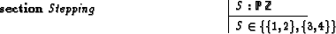

ZAP is embedded in the diverse interfaces (graphical, XEmacs, batch) provided by ZETA. Here, we look at the batch-oriented (command line) interface. Similar principles apply to the other interfaces.
Execution is involved by the two single-letter commands e
(execute expression) and p (execute predicate). The output
of the help command gives the following syntax for these commands:
e [-u <UNITNAME>] [ ( -r | -t | -f ) ] ( -n | -d | -o | <EXPR> ) p [-u <UNITNAME>] <PREDICATE>
The optional unit name specifies the section focus, as usual with
ZETA commands. The first group of options to the e command
has the following meaning:
-r - ``raw mode'' - indicates that sets in the
result should not be enumerated.
-t - ``try mode'' - indicates that sets in the
result should be enumerated to a certain extend. This may
fail, producing ``unresolved constraints'' diagnostics. This
is the default.
-f - ``force mode'' - indicates that sets in the
result should be forced to be completely enumerated. This may lead
to non-termination.
The last group of options of the e command allows us
to step through the solutions to the entire specification
or a set-result. Consider the (loose) specification:

Evaluating S yields in:
Typing e -n shows the next solution to S, {3,4}.
From the current value we are observing, we can also step
downwards (if the current value is a set value): typing e -d
now yields 3 (possibly more solutions), and e -n afterwards
4. With e -o we return to the outer target.
ZAP provides two options for timing and profiling. First, with the
command xconf ton/xconf toff timing of execution can
beactivated and deactivated.
Second, the command xprof can be used to display a profile
which counts the number of steps executed in each individual
constraint.